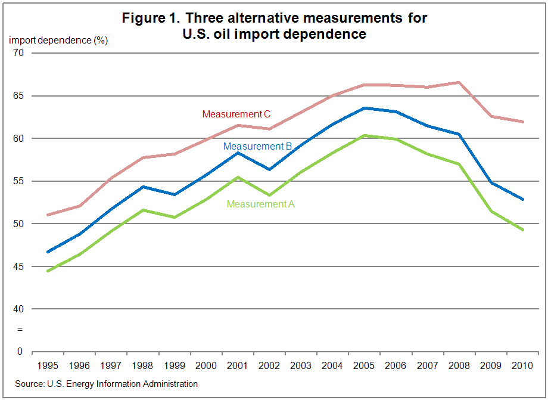
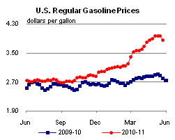
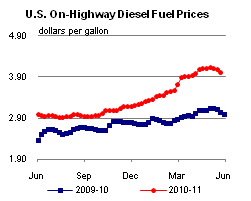
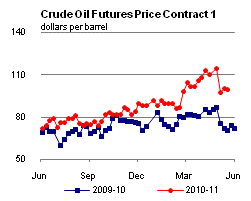
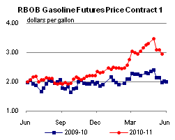
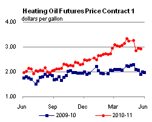
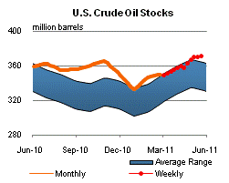
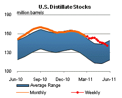
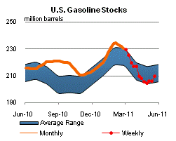
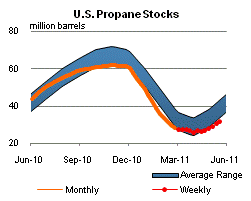

Released: May 25, 2011
Next Release: June 2, 2011
U.S. Oil Import Dependence: declining no matter how you measure it
U.S. oil import dependence is an issue perhaps as hotly debated as it is loosely defined. As discussed in a This Week in Petroleum article published in 2008, there is more than one way of measuring it. Different methods of calculation yield different results. But whichever way it is defined, U.S. dependence on imported oil has dramatically declined since peaking in 2005, continuing a trend that was beginning to emerge the last time This Week In Petroleum examined the issue. By the broadest measure, U.S. dependence on imported oil fell below the 50 percent mark last year for the first time since 1997. To put it succinctly, discrepancies in the way dependence is assessed arise because oil, for the most part, is imported as crude oil, but is consumed as refined products, of which crude oil is the main but not the only input - hence the need to clarify whether dependence is assessed at the output/consumption level or at the input level, and in the latter case what range of inputs is included as a basis for comparison. Two of the most common and straightforward definitions measure dependence as the ratio of total net oil imports (including crude and products) to total product consumption, or much more narrowly as the ratio of net imported crude oil to net crude oil inputs to refineries.
By the broadest standard (Measurement A in Table 1), U.S. dependence on imported oil fell from 60.3 percent in 2005 to 49.3 percent in 2010. If processing gains obtained from imported crudes are counted as imports (Measurement B), then dependence falls from a high of 63.6 percent in 2005 to 52.8 percent last year. A much narrower measure that looks at crude oil imports into the United States as a percentage of total refinery crude inputs (Measurement C) excludes ethanol, biodiesel, and natural gas liquids (NGLs) as sources of petroleum products that are almost entirely domestic in origin and also does not reflect the substantial recent growth in U.S. petroleum product exports. By that measure, import dependence was 62 percent last year, still significantly below its 2008 peak of 66.6 percent.
There is no single explanation for the decline in U.S. oil import dependence since 2005. Rather, the trend results from a variety of factors. Chief among those is a significant contraction in consumption. U.S. oil product deliveries declined by 1.7 million barrels per day (bbl/d) to 19.1 bbl/d in 2010, from 20.8 million bbl/d in 2005. This decline partly reflects the downturn in the underlying economy after the financial crisis of 2008. Not surprisingly, demand has bounced back somewhat from a low of 18.8 million bbl/d in 2009, when the U.S. economy bottomed out. But the downward trend in consumption started two years before the 2008 crisis and reflects factors such as changes in efficiency and consumer behavior as well as patterns of economic growth.
Shifts in supply patterns, including increases in domestic biofuels production, NGL output and refinery gain, also played an important role in moderating import dependence. U.S. ethanol net inputs grew from 230,000 bbl/d in 2005 to 779,000 bbl/d in 2010, helping to displace traditional hydrocarbon fuels and so reducing petroleum import needs. Strong gains in the deepwater Gulf of Mexico and the Bakken formation brought decades of contraction in domestic oil production to a sudden halt, and even led to a rebound. U.S. crude oil output increased by an estimated 334,000 bbl/d between 2005 and 2010, further eroding the need for imported crude oil.
Incremental refinery gains provide a smaller, but non-negligible, source of domestic supply growth. As U.S. refineries become increasingly complex, the amount of light products they are able to extract from crude oil keeps rising. Between 2005 and 2010, the volumetric increase in product output compared to crude oil input -- the "processing gain" -- rose by 75,000 bbl/d. The effect on U.S. oil dependence measurements depends on whether that entire gain, or only the portion of the gain that is specifically derived from domestic crude, is treated as domestic supply. Because oil is a global market, domestic supply and demand factors are only part of the story. Another component of reduced U.S. oil import dependence is the growth in export demand for U.S. refined products. Increased demand beyond the U.S. borders has lifted U.S. product exports to 2.3 million bbl/d in 2010 from 1.1 million bbl/d in 2005. Nowhere have U.S. product exports increased more than in the Americas, including Mexico, Canada, Central and South America and the Caribbean, thanks to economic and population growth and inadequate refining capacity in those countries. As a result, U.S. net imports (imports minus exports) of petroleum products plummeted in 2010 to their lowest level seen in the data history that begins in 1973.
The recent rise of U.S. product exports explains why a measure of U.S. import dependence based exclusively on refinery input, such as Measurement C in Figure 1, shows significantly higher dependence, and a slower decline in dependence, than broader measures based on total consumption. In other words, rising product export demand has caused U.S. net imports of products to decline much faster than net imports of crude oil.
The past, as the saying goes, is no guarantee of future performance. The EIA expects that the moderating trend in U.S. oil-import dependence to go on in the next decade. But the mix of factors responsible for it looks likely to evolve. In particular, EIA projects that continued improvements in energy efficiency, driven in part by tighter fuel economy standards, will prove increasingly important in moderating future demand growth, offsetting the upward impact of economic recovery.
| Table 1: Three Alternative Measurements for U.S. Oil Import Dependence ( Percent Dependence) |
|||
|---|---|---|---|
| Measurement A | Measurement B | Measurement C | |
| Year | Net oil imports (crude & products) as share of total demand |
Same as A with refinery gain for imported crude oil counted as imports |
Net imported crude oil as a percentage of net crude oil inputs to refineries |
| 1995-2000 | 49.2 | 51.8 | 55.7 |
| 2001 | 55.5 | 58.3 | 61.5 |
| 2002 | 53.4 | 56.4 | 61.1 |
| 2003 | 56.1 | 59.2 | 63.1 |
| 2004 | 58.4 | 61.7 | 65.0 |
| 2005 | 60.3 | 63.6 | 66.3 |
| 2006 | 59.9 | 63.2 | 66.2 |
| 2007 | 58.2 | 61.5 | 66.0 |
| 2008 | 57.0 | 60.5 | 66.6 |
| 2009 | 51.5 | 54.8 | 62.6 |
| 2010 | 49.3 | 52.8 | 62.0 |

Retail gasoline and diesel prices show sizeable weekly decreases
The U.S. average retail price of regular gasoline dropped 11 cents to hit $3.85 per gallon, marking the largest weekly decline since December 2008. The average price is $1.06 per gallon higher than last year at this time. The biggest decrease came in the Midwest, where prices plummeted almost 16 cents on the week. The Gulf Coast recorded an 11-cent decline; prices in the region are the lowest in the country at $3.71 per gallon. The average price on the East Coast fell about nine cents, while West Coast prices were down eight cents on average, but remain the highest among the major regions at $4.04 per gallon. Price movements were more muted in the Rocky Mountains, with the average gasoline price down about two cents for the week.
The national average diesel price fell for the third consecutive week, dropping more than 6 cents last week to $4.00 per gallon. This was the largest weekly decline in the national average diesel price since May 2010. The diesel price is $0.98 per gallon higher than last year at this time. Like gasoline, Midwest prices saw the biggest regional decline, dropping more than seven cents on the week. On the East Coast and Gulf Coast, average diesel prices were down more than six cents, while the West Coast average price fell about a nickel. Rounding out the regions, the Rocky Mountain diesel price was three cents lower this week.
Propane stocks continue to climb
Total U.S. inventories of propane rose last week, gaining 1.1 million barrels to end at 31.6 million barrels in total. The largest build was in the Midwest region with 0.7 million barrels of new propane stocks. The East Coast region added 0.3 million barrels and the Gulf Coast region grew by 0.1 million barrels. The Rocky Mountain/West Coast regional stocks were up slightly. Although propane stocks are tracking below the average range for this time of year, inventories have risen steadily for five consecutive weeks, an increase of 5.2 million barrels during that period. Propylene non-fuel use inventories represented 5.7 percent of total propane inventories.
Text from the previous editions of This Week In Petroleum is accessible through a link at the top right-hand corner of this page.
|  |  | ||||||
| Retail Data | Changes From | Retail Data | Changes From | ||||
| 05/23/11 | Week | Year | 05/23/11 | Week | Year | ||
| Gasoline | 3.849 | Diesel Fuel | 3.997 | ||||
|  |  | ||||||||||||||||||||||||||
|
 | ||||||||||||||||||||||||||
| *Note: Crude Oil Price in Dollars per Barrel. | |||||||||||||||||||||||||||
|  |  | ||||||
|  |  | ||||||
| Stocks Data | Changes From | Stocks Data | Changes From | ||||
| 05/20/11 | Week | Year | 05/20/11 | Week | Year | ||
| Crude Oil | 370.9 | Distillate | 141.1 | ||||
| Gasoline | 209.7 | Propane | 31.605 | ||||